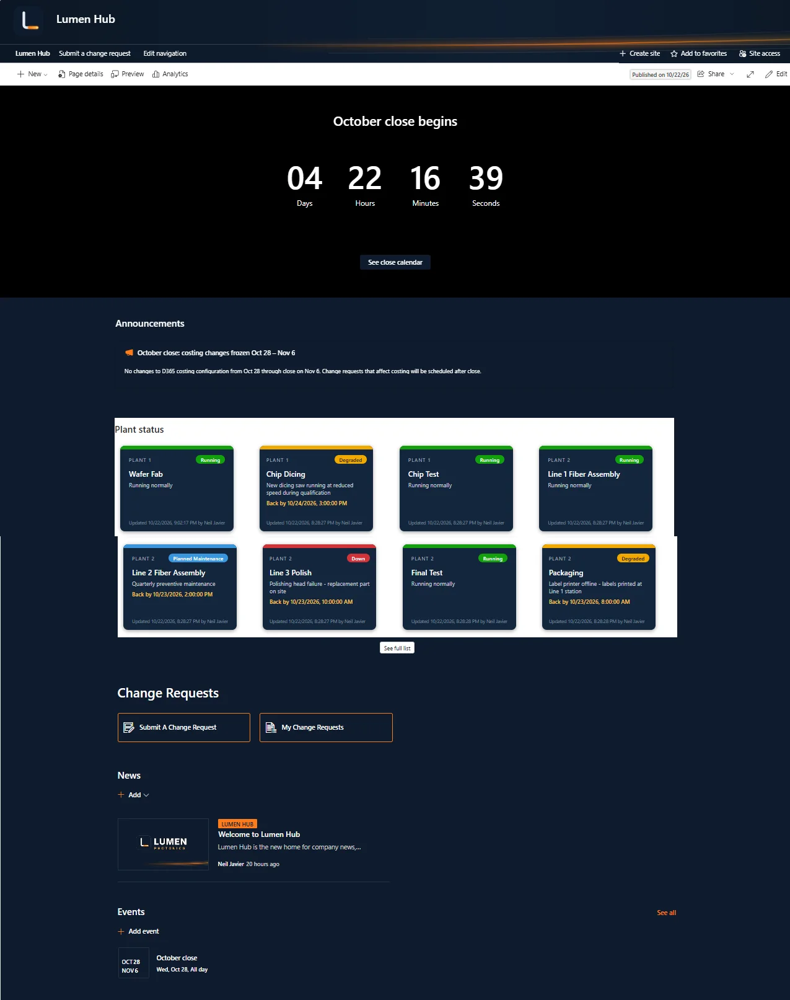
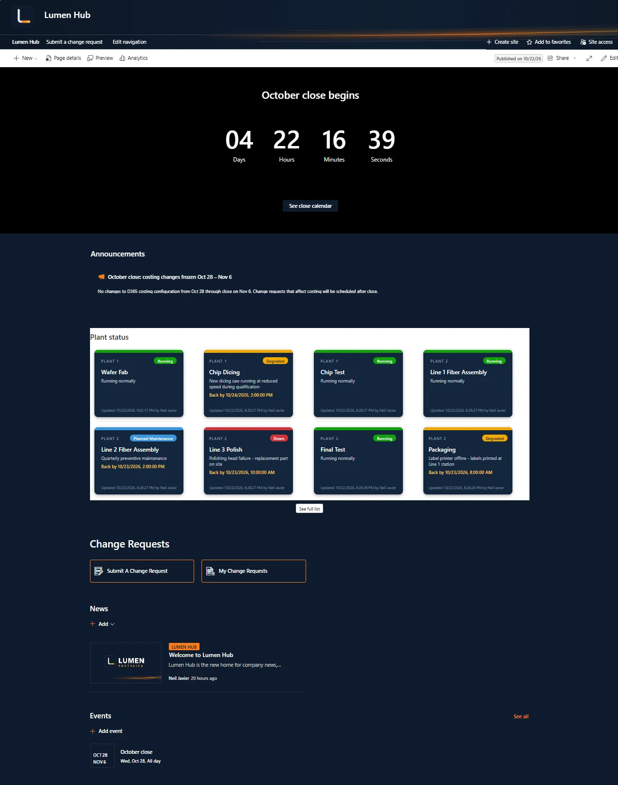
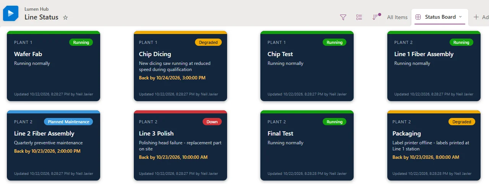
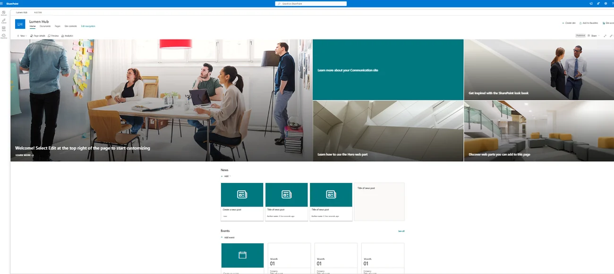
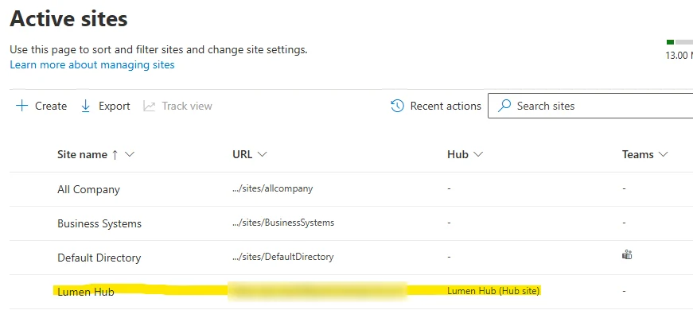
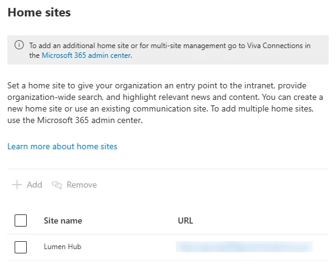
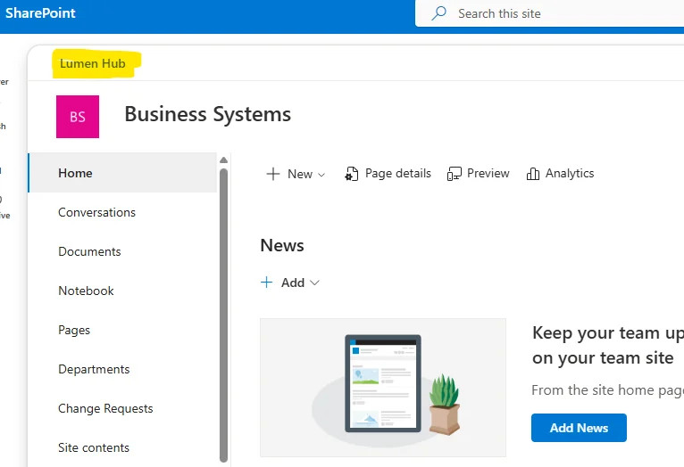
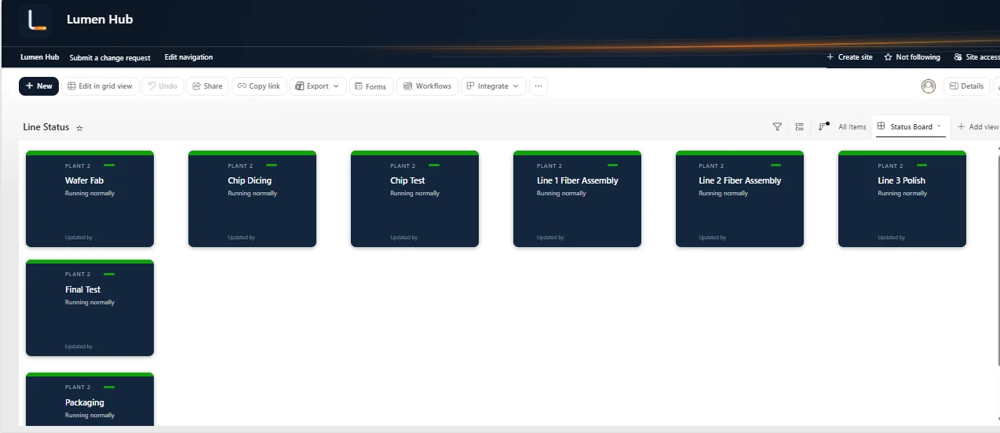

SharePoint intranet · JSON view formatting · Lumen Photonics lab
Approach highlighted
Turning a plain SharePoint list into a live, color-coded operations board with JSON view formatting, inside an intranet designed around tasks and named owners rather than decoration.
Project Summary
Lumen Hub is the company intranet for Lumen Photonics, a fictional fiber laser manufacturer with two plants and a headquarters. It's the tenant's root site, registered as a hub and designated as the home site. The page counts down to month-end close, carries announcements, links to the change request intake, rolls up news from department sites, and shows the live status of every production line.
The Finished Home Page
Scroll inside the frame to see the whole Lumen Hub home page as an employee sees it: the countdown to close, the costing freeze announcement, the live plant status board, the change request buttons, rolled-up news and the close calendar.



Business Problem
There was no front door. The default root site showed Microsoft's sample content, department sites were only reachable by direct link, and line status traveled by phone and radio, so planners and Finance found out about downtime late. People with access to a single list had no way to find it.

Information Architecture
Rather than create a new site next to an unused root site, the root communication site became Lumen Hub. It was registered as a hub so department sites share its navigation, theme and search, and designated as the home site so it's the company's landing page in SharePoint and Teams. Business Systems was associated with the hub without syncing hub permissions, so the shared navigation doesn't open up a private site.



A Home Page Built Around Tasks and Owners
Every section on the page had to answer three questions: what it shows, who it's for, and who keeps it current. Sections with no owner were removed, including the default Documents and People web parts and page comments.
| Section | Purpose | Owner |
|---|---|---|
| Countdown to close | Close begins in N days, with a link to the close calendar | Finance, monthly |
| Announcements | Urgent items such as the costing change freeze; expire after two weeks | Department leads |
| Plant status | Live status of every production line | Shift supervisors and maintenance |
| Change Requests | Submit a request, or see your own requests | Business Systems |
| News and Events | Rolled up from every site in the hub, not duplicated | Each site's owners |
Building the Status Board
The board is a SharePoint list with one row per production line: plant, status (Running, Degraded, Down, Planned Maintenance), reason, expected time back and a sort order. A gallery view with JSON formatting turns each row into a card. The color bar, status pill and "Back by" line all come from the data, and the "Updated by" line comes from SharePoint's built-in Modified and Modified By columns, so readers can tell whether to trust what they see. A simplified excerpt of the formatting:
{
"elmType": "div",
"customRowAction": { "action": "defaultClick" },
"children": [
{
"elmType": "div",
"style": {
"height": "8px",
"background-color": "=if([$field_2] == 'Down', '#D13438',
if([$field_2] == 'Degraded', '#F2A900',
if([$field_2] == 'Planned Maintenance', '#3A96DD', '#13A10E')))"
}
},
{ "elmType": "div", "txtContent": "[$Title]" },
{ "elmType": "div",
"txtContent": "=if([$field_3] == '', 'Running normally', [$field_3])" },
{ "elmType": "div",
"txtContent": "='Back by ' + toLocaleString([$field_4])",
"style": { "display": "=if(Number([$field_4]) == 0, 'none', 'block')" } },
{ "elmType": "div",
"txtContent": "='Updated ' + toLocaleString([$Modified]) + ' by ' + [$Editor.title]" }
]
}
When the First Version Showed Everything as Running
The first version rendered every line green with no reason, even the line that was down. Three separate problems caused it, and two of them were in the data model rather than the JSON:

field_2, field_3 and field_4. Formatting, flows and APIs use internal names, not display names.
Branding
A logo, header banner and news image were created for the company, and a dark navy and laser-orange theme was built in the SharePoint brand center. The first attempt used Add-SPOTheme in PowerShell, which failed on a sign-in component in the current SharePoint Online module; the brand center is the supported, point-and-click route and produced the same result.
Known Limitations
Skills Demonstrated
Hub and home site configuration, information architecture, communication site design, list JSON view formatting, gallery views, internal column names, choice column design, audience and ownership planning, SharePoint brand center themes, and troubleshooting rendering problems back to the data model.
More from the Lumen Photonics lab